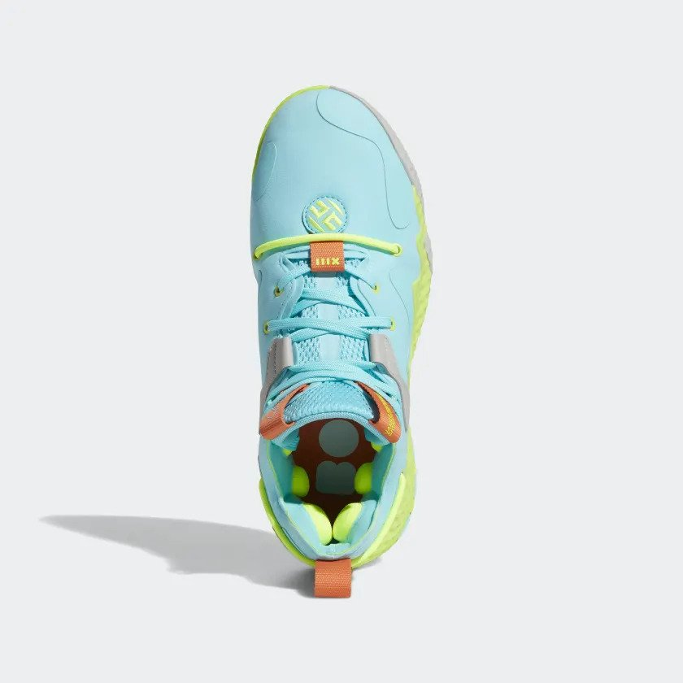
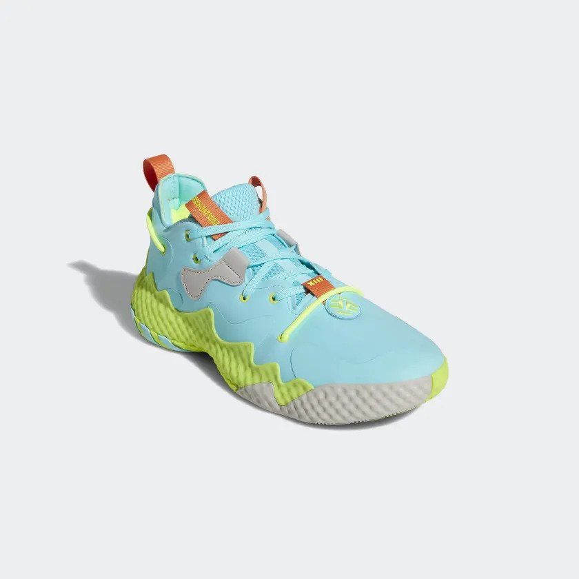
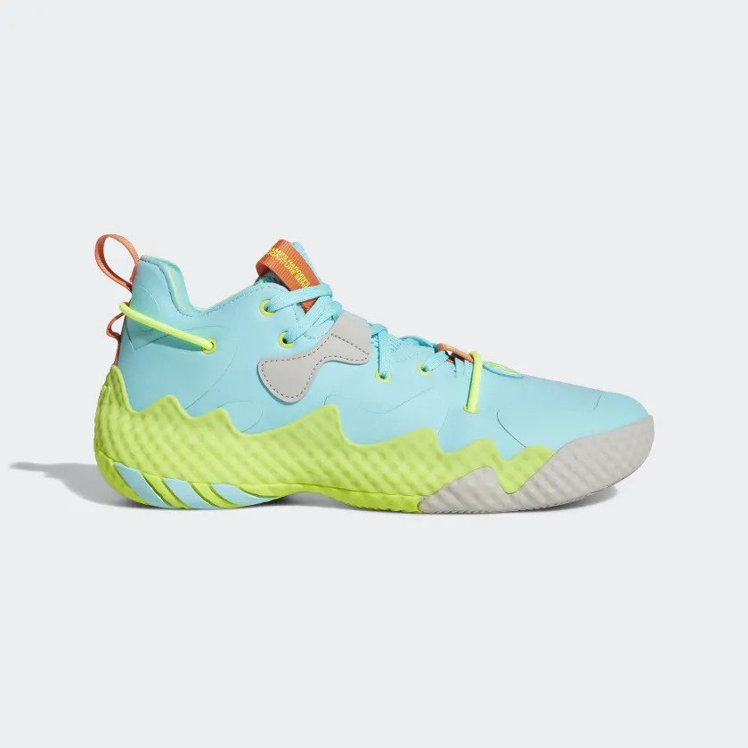
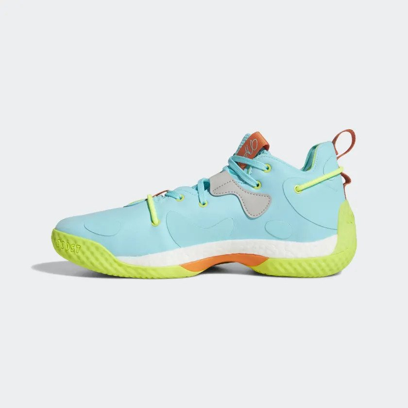
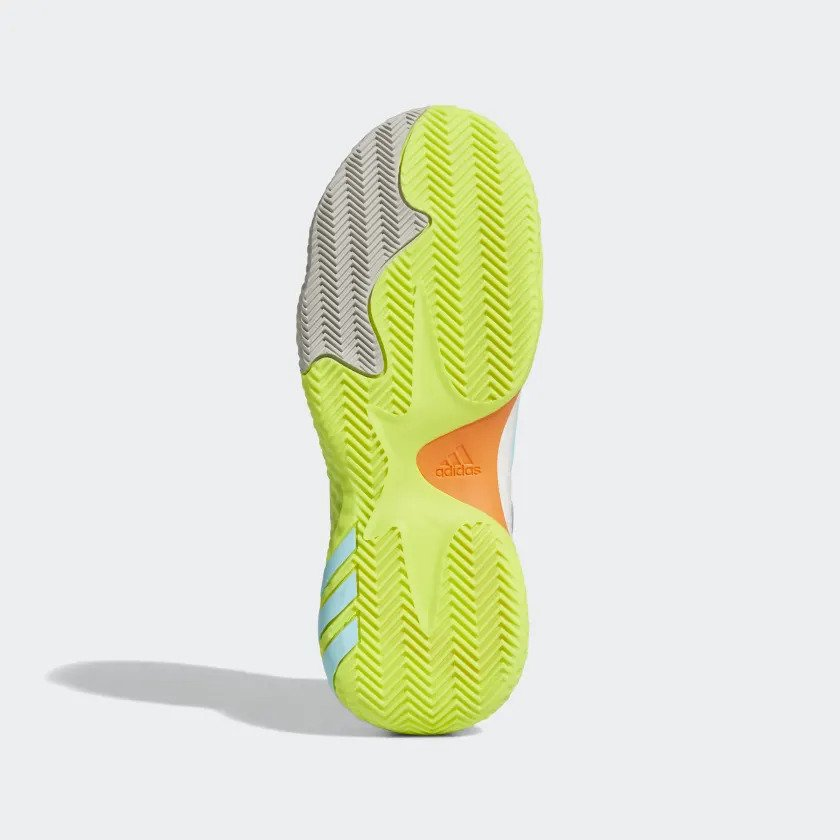

Background Information
The Harden Vol. 6, signature shoes for James Harden, were released on February 18, 2022, and the price came out to be $140.
With this new shoe, Adidas boasts about themselves for using recycled material, such as cutting scraps and post-consumer household waste, and the use of the Adidas ultra boost in the basketball shoe.
With this, they also have a list of specifications for their shoe, such as:
- -Regular Fit
- -Lace Closure
- -Textile Upper
- -Supportive, Locked-Down Feel
- -Boost Midsole
- -Rubber Outsole
- -25% of the the upper are made with a minimum of 50% recycled content
Where to Buy:
Harden Vol.6
Traction: 8/10
Overall, the traction is amazing in the Harden Vol.6. If you’re playing on a clean court, you will get some of the best traction out there with the amazing stoppage.
When playing on a dusty court, you will still get great traction, however, you will have to wipe off the dust from your shoes relatively frequently.
Even with the dusty court, you will get some response and the shoe won’t slip out from under you.
Cushion Setup: 6/10
In the Harden Vol.6, you have a similar setup to the Harden Vol.1 where you have the ultra boost cushion running throughout the shoe.
In the heel, you have a relatively soft cage that has a little bit of giving to it when you step down.
Then what gives this shoe a step above all the other Harden shoes is the use of holes to allow the heel to dig itself further into the cushion, making it less stiff.
Material: 7/10
When first using the shoe, the material seemed hard, however, once I started to use the shoe the materials started to become softer.
There was no need to break the shoe in, it was relatively good already, however, once it was used multiple times, the materials started to conform to my foot a lot more.
Even though it did get soft, the material also stayed very supportive. However, one drawback of the shoe, is that the material was able to get dirty quickly.
Fit: 7/10
class="mart6"I went true to size and it fit pretty well, however, it was a little long in the toes.
You could go down half a size, but it will get pretty cramped. The widths of the shoe are a little bit big, but that may be since I have narrower feet.
Lockdown: 7/10
Overall, the lateral containment of the shoe was pretty good. In the forefront of the shoe, you have this cage that keeps your feet contained in the shoe and the footbed.
For lateral stability, the shoe did a great job with the wide shoe as well as being very low to the ground.
Overall Rating: 7/10
All in all, I thought the Harden Vol.6 was a huge step up from the Harden Vol.5. The traction is phenomenal with the herringbone pattern and ease of wiping dust off.
The material is nice as it conforms to your feet after using them a couple of times, and the fit is good on the shoe. Also, the lockup in the shoe is great with the cage and Achilles cushion.
The only problems I have with this shoe are that the cushion isn’t the best and that the material gets dirty quite easily.





Images: Shoe Images by Adidas at https://www.adidas.com/us/harden-vol.-6-shoes/GV8703.html, CC BY-NC-ND.